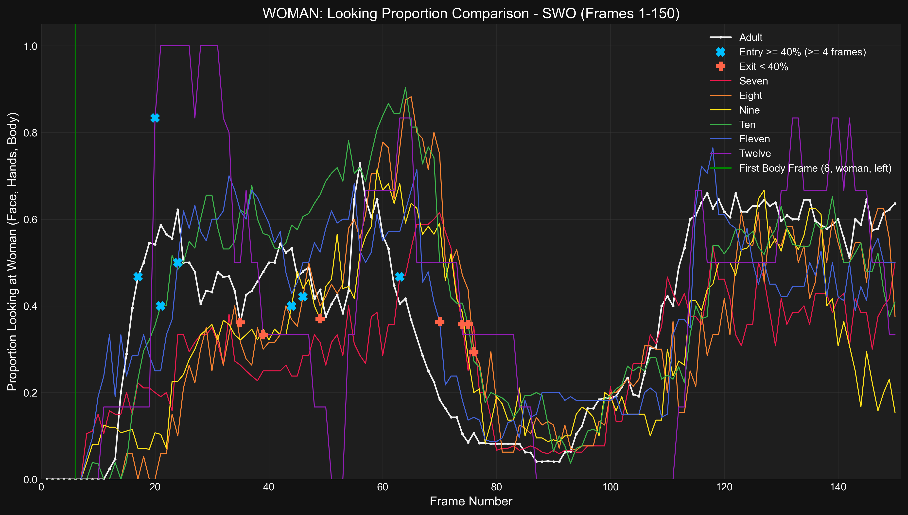
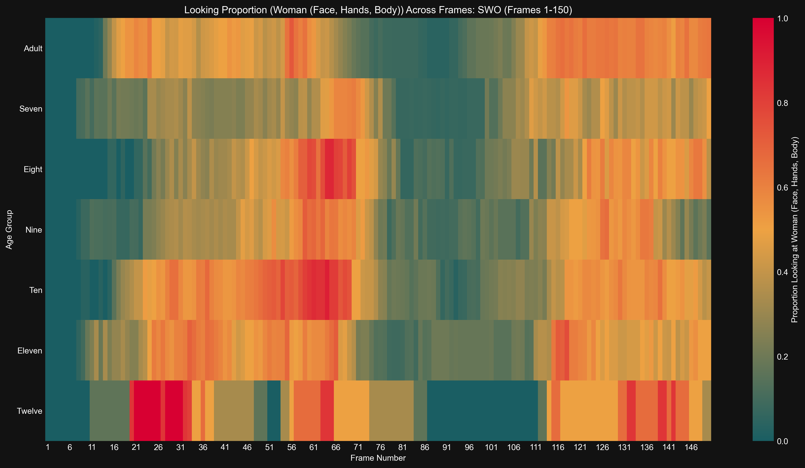

Generated: 2025-04-16 03:36:51
Time series of proportion looking at Woman (Face, Hands, Body) for Adult
Results (Adult):- Entry (≥40%, ≤F75): Frame 17- Exit (<40%): Frame 65- Duration (≥40%): 48 frames- Latency (from body frame): 11 frames
Time series of proportion looking at Woman (Face, Hands, Body) for Seven
Results (Seven):- Entry (≥40%, ≤F75): Frame 63- Exit (<40%): Frame 74- Duration (≥40%): 11 frames- Latency (from body frame): 57 frames
Time series of proportion looking at Woman (Face, Hands, Body) for Eight
Results (Eight):- Entry (≥40%, ≤F75): Frame 46- Exit (<40%): Frame 76- Duration (≥40%): 30 frames- Latency (from body frame): 40 frames
Time series of proportion looking at Woman (Face, Hands, Body) for Nine
Results (Nine):- Entry (≥40%, ≤F75): Frame 44- Exit (<40%): Frame 74- Duration (≥40%): 30 frames- Latency (from body frame): 38 frames
Time series of proportion looking at Woman (Face, Hands, Body) for Ten
Results (Ten):- Entry (≥40%, ≤F75): Frame 21- Exit (<40%): Frame 75- Duration (≥40%): 54 frames- Latency (from body frame): 15 frames
Time series of proportion looking at Woman (Face, Hands, Body) for Eleven
Results (Eleven):- Entry (≥40%, ≤F75): Frame 24- Exit (<40%): Frame 70- Duration (≥40%): 46 frames- Latency (from body frame): 18 frames
Time series of proportion looking at Woman (Face, Hands, Body) for Twelve
Results (Twelve):- Entry (≥40%, ≤F75): Frame 20- Exit (<40%): Frame 39- Duration (≥40%): 19 frames- Latency (from body frame): 14 frames
Detailed time series comparing proportion looking at Woman (Face, Hands, Body) across age groups.
Bar plot showing latency from body frame to >=40% entry (entry <= F75) looking at Woman (Face, Hands, Body) for swo
Results (Latency in Frames, 0 if no valid entry ≤F75): seven: 57, eight: 40, nine: 38, ten: 15, eleven: 18, twelve: 14, adult: 11
Bar plot showing duration >= 40% (entry <= F75) looking at Woman (Face, Hands, Body) for swo
Results (Duration in Frames, 0 if no valid entry ≤F75): seven: 11, eight: 30, nine: 30, ten: 54, eleven: 46, twelve: 19, adult: 48
Bar chart comparing mean proportion looking at Woman (Face, Hands, Body) across age groups.
Results (Mean Proportion): Seven: 0.281, Eight: 0.333, Nine: 0.311, Ten: 0.414, Eleven: 0.382, Twelve: 0.392, Adult: 0.373
Heatmap showing proportion looking at Woman (Face, Hands, Body) across frames and age groups.
